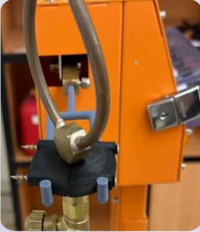
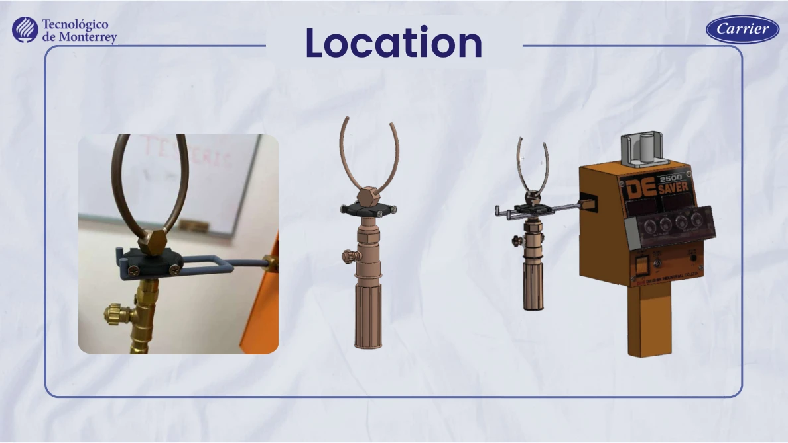

Turning handling needs into a fixture.
Designed and prototyped a holder intended to improve torch handling and reduce exposure to burn risks.
Design / prototypeInside the project.
Selected visuals from the academic team’s original presentation. Captions distinguish physical hardware from simulation.


The challenge
Translate operator-handling needs into a practical mechanical holding concept.
My contribution
- Worked on CAD design and assembly concepts in SolidWorks.
- Compared material choices using Granta and considered manufacturing processes.
- Produced and evaluated prototypes for fit and assembly.
- Prepared technical documentation and presented the academic proposal.
From design to fit testing
The project progressed from CAD, material comparison and manufacturing planning to a physical holder evaluated for mounting and torch handling. The photographs show the team prototype during that evaluation.
Engineering focus
Evaluate material selection and physical fit alongside the handling concept.
Outcome & scope
A design and prototype were developed and evaluated. No installed-device incident reduction or safety certification is claimed.
Professional experience and academic collaborations are labeled separately. Organization names identify the project context and do not imply endorsement.